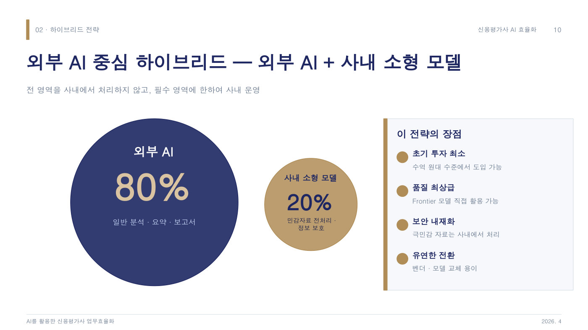

신용평가사는 기업이 빌린 돈을 갚을 능력이 있는지 등급(A, B 같은 점수)을 매기는 회사다. 이 등급 하나로 몇 조 원어치 채권(기업이 돈을 빌리며 발행하는 증서)의 금리가 결정되고, 국내에서 등급으로 굴러가는 금융시장 규모만 900조 원이다. 그런데 보고서 한 건을 연구원이 손으로 쓰는 데 이틀이 넘게 걸렸고, 발표자는 이 일을 AI로 자동화하자고 제안했다. 반발이 거셌다. AI가 쓴 보고서로 알려지면 회사의 신뢰가 무너진다는 걱정, 평가가 틀리면 금융감독원 검사와 소송이 따라붙는 법적 책임, 정보 유출은 곧 회사의 존립 위기라는 보안 최우선 기조가 벽처럼 서 있었다.
발표자는 회사를 설득하기 전에 스스로 증명하기로 했다. 발표 2주 전 100만 원짜리 맥미니를 사서 Claude Code(말로 지시하면 AI가 알아서 프로그램을 만들어 주는 도구)를 깔고, 원하는 보고서의 요구사항 10개를 적어 넣었다. AI가 구현 계획 30장을 뽑아 줬고, 파이썬의 파도 모르는 발표자가 "난 못해, 해결해줘"라고 하면 AI가 스스로 코드를 고쳐 가며 돌아갔다. 토요일과 일요일 저녁 합쳐 8시간 만에, 기업 이름만 치면 사업성·재무·산업분석에 논문식 각주까지 갖춘 보고서 초안이 나오는 에이전트(특정 업무를 전담하는 AI 작업자)가 완성됐다. 회사 자료는 하나도 쓰지 않고 공개 데이터만으로 만든 결과인데도, 업무의 60~70%는 대체 가능하다는 계산이 나왔다.
발표자의 결론은 외부 AI 80%에 사내 소형 모델 20%를 섞는 하이브리드다. 일반 분석과 보고서는 성능이 가장 좋은 외부 AI에 맡기고, 절대 밖으로 내보낼 수 없는 공시 전 기밀자료만 회사 안의 작은 AI로 처리하는 방식이다. 자체 AI를 만들면 10~30억 원과 12~18개월이 드는데 품질은 한 세대 뒤지지만, 외부 AI는 수억 원과 1~3개월이면 최상급 품질을 쓸 수 있기 때문이다. 진짜 경쟁력은 AI 모델이 아니라 20년 애널리스트 노하우가 담긴 프롬프트(AI에게 주는 지시문)라는 사실도 깨달아, 이를 회사 자산으로 지키는 보안 설계와 함께 A1부터 A7까지 업무별 에이전트 7종을 24개월에 걸쳐 도입하는 로드맵을 세웠다. 각 단계마다 검증 관문을 통과해야 다음으로 넘어가고, 최종 등급 결정은 끝까지 사람이 맡는다.